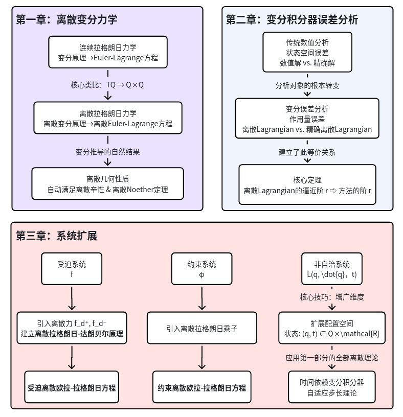

离散力学与变分积分子（Discrete Mechanics and Variational Integrators）
连续到离散的核心：One of the simple, but important ideas in discrete mechanics is easiest to say from the Lagrangian point of view. Namely, consider a mechanical system with configuration manifold Q. The velocity phase space is then T Q and the Lagrangian is a map L : T Q → R. In discrete mechanics, the starting point is to replace T Q with Q × Q and we regard, intuitively, two nearby points as being the discrete analogue of a velocity vector.
约束流形的处理，嵌入线性空间，辅以约束方程：Recall from basic geometric mechanics (as in Marsden and Ratiu (1999) for instance) that specifying a constraint manifold Q means that one may already have specified constraints: for example, Q may already be a submanifold of a linear space that is specified by constraints. However, when constructing integrators in Section 2.1 we will take Q to be linear, although this is only for simplicity. One way of handling a nonlinear Q is to embed it within a linear space and use the theory of constrained systems: this point of view is developed in Section 3.
Finally, we mention that techniques of geometric integration in the sense of preserving manifold or Lie group structures, as given in Budd and Iserles (1999), Iserles, Munthe-Kaas and Zanna (2000) and references therein, presumably could, and probably should, be combined with the techniques described herein for a more efficient treatment of certain classes of constraints in mechanical systems. Such an enterprise is for the future.

一、离散变分力学
1.1 连续拉格朗日力学
1.1.1 基本定义
配置流形：\(Q\)，系统的位置空间
状态空间：切丛 \(TQ\)，包含位置和速度信息 \((q, \dot{q})\)
拉格朗日函数：\(L: TQ \to \mathbb{R}\)，通常为动能减势能
路径空间：\(\mathcal{C}(Q) = \{q: [0,T] \to Q \mid q \text{ 是 } C^2 \text{ 曲线}\}\)
作用量泛函：\(\mathfrak{G}(q) = \int_0^T L(q(t), \dot{q}(t)) \, dt\)
切空间：\(T_q\mathcal{C}(Q) = \{v_q: [0,T] \to TQ \mid \pi_Q \circ v_q = q\}\)
二阶子流形：\(\ddot{Q} = \{w \in T(TQ) \mid T\pi_Q(w) = \pi_{TQ}(w)\} \subset T(TQ)\)
1.1.2 理论成果
变分原理与Euler-Lagrange方程
作用量泛函的微分：\(\mathbf{d}\mathfrak{G}(q) \cdot \delta q = \int_0^T \left[\frac{\partial L}{\partial q^i}\delta q^i + \frac{\partial L}{\partial \dot{q}^i}\frac{d}{dt}\delta q^i\right] dt\)
通过分部积分得到：\(\mathbf{d}\mathfrak{G}(q) \cdot \delta q = \int_0^T \left[\frac{\partial L}{\partial q^i} - \frac{d}{dt}\frac{\partial L}{\partial \dot{q}^i}\right] \cdot \delta q^i dt + \left[\frac{\partial L}{\partial \dot{q}^i}\delta q^i\right]_0^T\)
对于固定端点的变分 \((\delta q(0) = \delta q(T) = 0)\)，给出Euler-Lagrange方程\(\frac{\partial L}{\partial q^i}(q,\dot{q}) - \frac{d}{dt}\left(\frac{\partial L}{\partial \dot{q}^i}(q,\dot{q})\right) = 0\)Euler-Lagrange映射：\(D_{\mathrm{EL}}L: \ddot{Q} \to T^*Q=\frac{\partial L}{\partial q^i} - \frac{d}{dt}\frac{\partial L}{\partial \dot{q}^i}\)
拉格朗日1-形式（动量形式）：\(\Theta_L = \frac{\partial L}{\partial \dot{q}^i}\mathbf{d}q^i\)
拉格朗日向量场与流
拉格朗日向量场：\(X_L: TQ \to T(TQ)\)，满足\(D_{\mathrm{EL}}L \circ X_L = 0\)
- 曲线 \(q \in \mathcal{C}(Q)\) 是 Euler-Lagrange 方程的解当且仅当 \((q,\dot{q})\) 是 \(X_L\) 的积分曲线
拉格朗日流：\(F_L: TQ \times \mathbb{R} \to TQ\)，\(X_L\) 的流
拉格朗日流的辛性
限制作用量：\(\tilde{\mathfrak{G}}: TQ \to \mathbb{R}\)，满足Euler-Lagrange方程的运动对应的作用量，仅为初始状态的函数
对限制作用量进行一次外微分，可以发现其只和拉格朗日1-形式相关
再进行一次外微分，可以得到拉格朗日2-形式（辛形式）：\(\Omega_L = \mathbf{d}\Theta_L\)利用外微分算子的性质，证明拉格朗日流保持辛形式：\((F_L^T)^*(\Omega_L) = \Omega_L\)
辛形式坐标表达式：\(\Omega_L(q,\dot{q}) = \frac{\partial^2 L}{\partial q^i\partial \dot{q}^j}\mathbf{d}q^i \wedge \mathbf{d}q^j + \frac{\partial^2 L}{\partial \dot{q}^i\partial \dot{q}^j}\mathbf{d}\dot{q}^i \wedge \mathbf{d}q^j\)
拉格朗日流的等变性与守恒律（连续对称性）
群变换：\(\Phi: G \times Q \to Q\)，李群 \(G\) 在 \(Q\) 上的作用
切提升：\(\Phi^{TQ}: G \times TQ \to TQ\)
无穷小生成元（群变换对应的向量场）：\(\xi_Q: Q \to TQ\)，\(\xi_{TQ}: TQ \to T(TQ)\)
拉格朗日动量映射：\(J_L(v_q) \cdot \xi = \Theta_L \cdot \xi_{TQ}(v_q) = \left\langle \frac{\partial L}{\partial \dot{q}}, \xi_Q(q) \right\rangle\)（类似于雅可比速度变换）
等变性条件（动量计算与李群变换可以交换）：当提升作用保持拉格朗日1-形式时：\((\Phi_g^{TQ})^*\Theta_L = \Theta_L \quad \Rightarrow \quad J_L \circ \Phi_g^{TQ} = \mathrm{Ad}_{g^{-1}}^* \circ J_L\)
Noether定理：如果拉格朗日函数在群作用下不变：\(L \circ \Phi_g^{TQ} = L \quad \text{对所有 } g \in G\)，则相应的动量映射守恒：\(J_L \circ F_L^t = J_L \quad \text{对所有时间 } t\)
1.2 离散拉格朗日力学
| 连续力学 | 离散力学 | 数学对应 |
|---|---|---|
| 状态空间 \(TQ\) | 离散状态空间 \(Q \times Q\) | 切丛→笛卡尔积 |
| 拉格朗日量 \(L(q,\dot{q})\) | 离散拉格朗日量 \(L_d(q_0,q_1,h)\) | 函数→两点函数 |
| 作用量 \(\int L dt\) | 离散作用量 \(\sum L_d\) | 积分→求和 |
| 变分原理 \(\delta \int L dt = 0\) | 离散变分原理 \(\delta \sum L_d = 0\) | 连续变分→离散变分 |
1.2.1 基本定义
配置流形：\(Q\)
离散状态空间：\(Q \times Q\)，直观理解为"两个相邻时刻的位置"
离散路径空间：\(\mathcal{C}_d(Q) = \{q_d: \{t_k\} \to Q\} \cong Q^{N+1}\)
离散作用量：\(\mathfrak{G}_d(q_d) = \sum_{k=0}^{N-1} L_d(q_k, q_{k+1})\)
离散演化算子：\(X_{L_d}: Q\times Q \to (Q\times Q) \times (Q\times Q)\)
离散映射：\(F_{L_d} = \sigma \circ X_{L_d}\)
二阶性条件：保证形式 \((q_0,q_1) \mapsto (q_1,q_2)\)
1.2.2 理论成果
离散变分原理与离散Euler-Lagrange方程
离散变分原理：在固定端点 \(q_0, q_N\) 条件下，真实轨迹使 \(\mathfrak{G}_d\) 取驻值。通过离散变分计算得到：\(\mathbf{d}\mathfrak{G}_d(q_d) \cdot \delta q_d = \sum_{k=1}^{N-1} D_{\mathrm{DEL}}L_d \cdot \delta q_k + \text{边界项}\)
离散Euler-Lagrange映射：\(D_{\mathrm{DEL}}L_d((q_{k-1},q_k),(q_k,q_{k+1})) = D_2L_d(q_{k-1},q_k) + D_1L_d(q_k,q_{k+1})\)
离散拉格朗日1-形式：\(\Theta_{L_d}^+ = D_2L_d \mathbf{d}q_1, \quad \Theta_{L_d}^- = -D_1L_d \mathbf{d}q_0\)
两个1-形式的关系：虽然有两个离散1-形式 \(\Theta_{L_d}^+\) 和 \(\Theta_{L_d}^-\)，但满足：\(\mathbf{d}L_d = \Theta_{L_d}^+ - \Theta_{L_d}^- \quad \Rightarrow \quad \mathbf{d}\Theta_{L_d}^+ = \mathbf{d}\Theta_{L_d}^-\)，这保证了只有一个离散辛形式 \(\Omega_{L_d}\)离散Euler-Lagrange方程：\(D_2L_d(q_{k-1},q_k) + D_1L_d(q_k,q_{k+1}) = 0\)
离散拉格朗日流：\(F_{L_d}: (q_{k-1},q_k) \mapsto (q_k,q_{k+1})\)
离散拉格朗日流的辛性
从离散作用量的二阶微分得到：\(\mathbf{d}^2\hat{\mathfrak{G}}_d = 0 \quad \Rightarrow \quad (F_{L_d})^*\Omega_{L_d} = \Omega_{L_d}\)
离散辛形式：\(\Omega_{L_d} = \mathbf{d}\Theta_{L_d}^+ = \mathbf{d}\Theta_{L_d}^- = \frac{\partial^2 L_d}{\partial q_0^i \partial q_1^j} \mathbf{d}q_0^i \wedge \mathbf{d}q_1^j\)
离散拉格朗日流的等变性与守恒律
李群作用 \(\Phi: G \times Q \to Q\)
离散动量映射：\(\begin{aligned} J_{L_d}^+(q_0,q_1) \cdot \xi &= \langle D_2L_d(q_0,q_1), \xi_Q(q_1) \rangle \\ J_{L_d}^-(q_0,q_1) \cdot \xi &= \langle -D_1L_d(q_0,q_1), \xi_Q(q_0) \rangle \end{aligned}\)
离散Noether定理：如果离散拉格朗日量在群作用下不变：\(L_d \circ \Phi_g^{Q\times Q} = L_d\)，则离散动量映射守恒：\(J_{L_d} \circ F_{L_d} = J_{L_d}\)
1.3 连续哈密顿力学
| 拉格朗日框架 | 哈密顿框架 | 转换关系 |
|---|---|---|
| 状态空间 \(TQ\) | 相空间 \(T^*Q\) | 勒让德变换 \(\mathbb{F}L\) |
| 拉格朗日量 \(L(q,\dot{q})\) | 哈密顿量 \(H(q,p)\) | \(H = p\dot{q} - L\) |
| Euler-Lagrange方程 | Hamilton方程 | 通过勒让德变换等价 |
| 拉格朗日辛形式 \(\Omega_L\) | 典范辛形式 \(\Omega\) | \(\Omega_L = (\mathbb{F}L)^*\Omega\) |
1.3.1 基本定义
配置流形：\(Q\)
相空间：余切丛 \(T^*Q\)
典范1-形式（动量形式）：\(\Theta_{p_q}(u_{p_q}) = \langle p_q, T\pi_{T^*Q}(u_{p_q}) \rangle\)，\(\Theta = p_i\mathbf{d}q^i\)
典范2-形式（辛形式）：\(\Omega = -\mathbf{d}\Theta = \mathbf{d}q^i \wedge \mathbf{d}p_i\)
1.3.2 理论成果
哈密顿向量场与流
哈密顿向量场 \(X_H\) 由下式唯一确定：\(\mathbf{i}_{X_H}\Omega = \mathbf{d}H\)，\(\mathbf{i}_{X_H}\Omega(V) = \Omega(X_H, V)\)
哈密顿方程（坐标形式）：\(\dot{q}^i = \frac{\partial H}{\partial p_i}, \quad \dot{p}_i = -\frac{\partial H}{\partial q^i}\)
哈密顿流 \(F_H^t\) 自动保持辛结构：\((F_H^t)^*\Omega = \Omega\)
哈密顿流的等变性与守恒律
余切提升：群作用 \(\Phi: G \times Q \to Q\) 提升到 \(\Phi^{T^*Q}: G \times T^*Q \to T^*Q\)，\(\Phi_g^{T^*Q}(p_q) = \Phi_{g^{-1}}^*(p_q)\)
哈密顿动量映射：\(J_H(p_q) \cdot \xi = \Theta(p_q) \cdot \xi_{T^*Q}(p_q) = \langle p_q, \xi_Q(q) \rangle\)
余切提升自动保持典范1-形式：\((\Phi_g^{T^*Q})^*\Theta = \Theta\)，哈密顿动量映射 \(J_H\) 总是等变的
哈密顿Noether定理：如果 \(H\) 在群作用下不变，则 \(J_H\) 沿哈密顿流守恒
勒让德变换
拉格朗日→哈密顿：\(\mathbb{F}L: TQ \to T^*Q, \quad (q,\dot{q}) \mapsto \left(q, \frac{\partial L}{\partial\dot{q}}(q,\dot{q})\right)\)
哈密顿→拉格朗日：\(\mathbb{F}H: T^*Q \to TQ, \quad (q,p) \mapsto \left(q, \frac{\partial H}{\partial p}(q,p)\right)\)
哈密顿力学中，哈密顿向量场对于任意哈密顿量都是完全定义的，一定存在；
拉格朗日力学中，拉格朗日向量场存在且唯一的条件为拉格朗日是正则的正则：\(\mathbb{F}L\) 是局部微分同胚（坐标表达为 \(D_2D_2L\) 可逆）；超正则：\(\mathbb{F}L\) 是全局微分同胚
在正则条件下， \(L\) 和 \(H\) 通过勒让德变换相关：\(H(q,p) = \mathbb{F}L(q,\dot{q}) \cdot \dot{q} - L(q,\dot{q})\)
则有：\(\begin{aligned} X_L &= (\mathbb{F}L)^*X_H,&\Omega_L &= (\mathbb{F}L)^*\Omega\\ J_L &= (\mathbb{F}L)^*J_H,&F_L^t &= (\mathbb{F}L)^{-1} \circ F_H^t \circ \mathbb{F}L \end{aligned}\)
生成函数
每一个辛变换\(F: T^*Q \to T^*Q\)都可以由一个生成函数刻画。考虑图的拉格朗日子流形 \(\Gamma(F) \subset T^*Q \times T^*Q\)，定义1-形式 \(\hat{\Theta} = \pi_2^*\Theta - \pi_1^*\Theta\)，局部存在 \(S: \Gamma(F) \to \mathbb{R}\) 使得：\(i_F^*\hat{\Theta} = \mathbf{d}S\)
第一类生成函数
坐标选择：以 \((q_0, q_1)\) 为自变量
变换关系：\(p_0 = -D_1S(q_0, q_1), \quad p_1 = D_2S(q_0, q_1)\)
存在性条件：需要保证从 \((q_0, p_0)\) 到 \((q_1, p_1)\) 的映射是良定义的
1.4 离散哈密顿力学
| 方面 | 连续力学 (1.4章) | 离散力学 (1.5章) |
|---|---|---|
| 状态空间 | \(TQ\) 或 \(T^*Q\) | \(Q \times Q\) |
| 勒让德变换 | \(\mathbb{F}L: TQ \to T^*Q\) | \(\mathbb{F}^{\pm}L_d: Q\times Q \to T^*Q\) |
| 生成函数 | 任意辛变换 \(F\) 有生成函数 \(S\) | 离散拉格朗日 \(L_d\) 自身就是生成函数 |
| 核心方程 | 哈密顿方程 \(\dot{q} = \partial H/\partial p\) 等 | 离散哈密顿映射方程 \(p_0 = -D_1 L_d\) 等 |
| 几何性质 | 哈密顿流保持 \(\Omega\) | 离散哈密顿映射保持 \(\Omega\) |
1.4.1 基本定义
离散状态空间：\(Q \times Q\)
离散纤维导数：\(\begin{aligned} \mathbb{F}^+L_d: (q_0, q_1) \mapsto (q_1, p_1) &= (q_1, D_2 L_d(q_0, q_1))\\ \mathbb{F}^-L_d: (q_0, q_1) \mapsto (q_0, p_0) &= (q_0, -D_1 L_d(q_0, q_1)) \end{aligned}\)
正则性：\(\mathbb{F}^+L_d\) 和 \(\mathbb{F}^-L_d\) 都是局部同构时，称 \(L_d\) 是正则的；若为全局同构，则称超正则的
1.4.2 理论成果
离散哈密顿映射
离散哈密顿映射：\(\tilde{F}_{L_d} = \mathbb{F}^{\pm}L_d \circ F_{L_d} \circ (\mathbb{F}^{\pm}L_d)^{-1}\),\(\tilde{F}_{L_d} = \mathbb{F}^+L_d \circ (\mathbb{F}^-L_d)^{-1}\)
坐标表达：\(\tilde{F}_{L_d}: (q_0, p_0) \mapsto (q_1, p_1)\) ，由下式隐式定义：\(p_0 = -D_1 L_d(q_0, q_1), \quad p_1 = D_2 L_d(q_0, q_1)\)
离散拉格朗日函数 \(L_d(q_0, q_1)\) 就是离散哈密顿映射 \(\tilde{F}_{L_d}\) 的第一类生成函数
区间动量：定义 \(p_{k,k+1}^+ = \mathbb{F}^+L_d(q_k, q_{k+1})\)，\(p_{k,k+1}^- = \mathbb{F}^-L_d(q_k, q_{k+1})\)
动量匹配：离散欧拉-拉格朗日方程等价于 \(p_{k-1,k}^+ = p_{k,k+1}^-\)
离散哈密顿映射的辛性与守恒律
辛性：\(\tilde{F}_{L_d}\) 保持典范辛形式：\(\tilde{F}_{L_d}^*\Omega = \Omega\)
动量映射保持：离散动量映射通过离散勒让德变换与哈密顿动量映射相联系：\(J_{L_d}^{\pm} = (\mathbb{F}^{\pm}L_d)^*J_H\)
离散Noether定理：若 \(L_d\) 在群作用下不变，则离散动量映射 \(J_{L_d}\) 在离散哈密顿映射下守恒
与连续系统的关系
精确离散拉格朗日量：\(L_d^E(q_0, q_1, h) = \int_0^h L(q_{0,1}(t), \dot{q}_{0,1}(t)) \, dt\)
离散欧拉-拉格朗日方程的解 \(\{q_k\}\)恰好是连续欧拉-拉格朗日方程的解在离散时间点上的采样：\(q_k = q(t_k)\)
离散哈密顿映射\(\tilde{F}_{L_d^E}\)精确等于连续哈密顿流\(F_H^h\)：\(\tilde{F}_{L_d^E} = F_H^h\)
几何结构对应：\(\Theta_{L_d}^{\pm} = (\mathbb{F}^{\pm}L_d)^*\Theta,\enspace \Omega_{L_d} = (\mathbb{F}^{\pm}L_d)^*\Omega,\enspace J_{L_d}^{\pm} = (\mathbb{F}^{\pm}L_d)^*J_H\)
1.5 哈密顿-雅可比理论
1.5.1 基本定义
扩展相空间：\(T^*Q \times \mathbb{R}\)，包含时间变量
扩展典范1-形式：\(\Theta_H = i_{T^*Q}^* \Theta - i_{T^*Q}^* H \wedge \mathbf{d}t\)
扩展典范2-形式（辛形式）：\(\Omega_H = -\mathbf{d}\Theta_H = i_{T^*Q}^* \Omega - i_{T^*Q}^* \mathbf{d}H \wedge \mathbf{d}t\)
1.5.2 理论成果
哈密顿-雅可比方程
选择 \((q_0, q_1, t)\) 作为坐标，生成函数条件给出：\(\begin{aligned} p_0 &= -\frac{\partial S}{\partial q_0}(q_0, q_1, t) \\ p_1 &= \frac{\partial S}{\partial q_1}(q_0, q_1, t) \\ H\left(q_1, \frac{\partial S}{\partial q_1}(q_0, q_1, t)\right) &= \frac{\partial S}{\partial t}(q_0, q_1, t) \end{aligned}\)
最后一个等式称为哈密顿-雅可比方程：生成函数 \(S: Q \times Q \times \mathbb{R} \to \mathbb{R}\) 满足的偏微分方程：\(\frac{\partial S}{\partial t} + H\left(q, \frac{\partial S}{\partial q}\right) = 0\)
边界条件：需要指定 \(S\) 在某个初始时间的值来确定唯一解
雅可比解
定义：哈密顿-雅可比方程的特定解，由作用量给出：\(S(q_0, q_1, t) = \int_0^t L(q_{0,1}(\tau), \dot{q}_{0,1}(\tau)) \, d\tau\)
路径条件：\(q_{0,1}(\tau)\) 是连接 \(q_0\) 和 \(q_1\) 的真实物理轨迹，满足欧拉-拉格朗日方程
存在性：对于正则系统，哈密顿-雅可比方程存在唯一的雅可比解
表达式：雅可比解由作用量给出，与精确离散拉格朗日函数一致：\(S(q_0, q_1, t) = L_d^E(q_0, q_1, t)\)
二、时变离散变分力学
2.1 连续拉格朗日力学
2.1.1 基本定义
配置流形：\(Q\)，时间空间：\(\mathbb{R}\)
扩展配置流形：\(\bar{Q} = \mathbb{R} \times Q\)
扩展状态空间：\(\mathbb{R} \times TQ\)
扩展拉格朗日量：\(L: \mathbb{R} \times TQ \to \mathbb{R}\)
扩展路径空间：\(\bar{\mathcal{C}} = \{ c: [a_0, a_f] \to \bar{Q} \mid c \text{ 是 } C^2 \text{ 曲线且 } c_t'(a) > 0 \}\)
关联曲线：\(q(t) = c_q(c_t^{-1}(t))\)，其中 \(t_0 = c_t(a_0)\)，\(t_f = c_t(a_f)\)
2.1.2 理论成果
作用量的变分
扩展作用量：\(\bar{\mathfrak{G}}(c) = \int_{t_0}^{t_f} L(\hat{\dot{q}}(t)) \, dt\)，也可写为：\(\bar{\mathfrak{G}}(c) = \int_{a_0}^{a_f} L\left(c_t, c_q, \frac{c_q'}{c_t'}\right) c_t' \, da\)
变分公式：\(\mathbf{d}\bar{\mathfrak{G}}(c) \cdot \delta c = \int_{t_0}^{t_f} \bar{D}_{\text{EL}}L(\hat{\tilde{q}}) \cdot \delta c \, dt + \bar{\Theta}_L(\hat{\tilde{q}}) \cdot \hat{\delta c} \Big|_{t_0}^{t_f}\)
\(\bar{D}_{\text{EL}}L\)：扩展欧拉-拉格朗日映射
\(\bar{\Theta}_L\)：扩展拉格朗日1-形
扩展欧拉-拉格朗日方程：\(\bar{D}_{\text{EL}}L(\hat{\tilde{q}}) = 0\)，分量形式为：\(\begin{aligned} \frac{\partial L}{\partial q^i} - \frac{d}{dt} \left( \frac{\partial L}{\partial \dot{q}^i} \right) = 0 \quad \text{(运动方程)}\\ \frac{\partial L}{\partial t} + \frac{d}{dt} \left( \frac{\partial L}{\partial \dot{q}^i} \dot{q}^i - L \right) = 0 \quad \text{(能量演化)} \end{aligned}\)
- 能量演化方程和运动方程是冗余的，满足第一个自然满足第二个，因此第二个方程一般用来分析系统能量变化
能量函数：\(E_L(t, q, \dot{q}) = \frac{\partial L}{\partial \dot{q}} \cdot \dot{q} - L\)，若 \(L\) 不显含时间，则 \(E_L\) 守恒。
拉格朗日向量场与流映射
扩展拉格朗日向量场：\(\bar{X}_L: \mathbb{R} \times TQ \to T(\mathbb{R} \times TQ)\)满足：\(\bar{D}_{\text{EL}}L \circ \bar{X}_L = 0,\quad T\pi_{\mathbb{R}} \circ \bar{X}_L = (t, 1)\)
扩展拉格朗日流映射：\(\bar{F}_L^h: \mathbb{R} \times TQ \to \mathbb{R} \times TQ\)
拉格朗日流的辛性
扩展拉格朗日辛形式：\(\Omega_L = -\mathbf{d} \bar{\Theta}_L\)
守恒律：\((\bar{F}_L^h)^* \Omega_L = \Omega_L\)，即扩展拉格朗日流保持辛形式不变。
拉格朗日流的守恒律
李群作用：\(\Phi^{\bar{Q}}: G \times \bar{Q} \to \bar{Q}\)
扩展拉格朗日动量映射：\(\bar{J}_L(t, q, \dot{q}) \cdot \xi = \bar{\Theta}_L \cdot \xi_{\mathbb{R} \times TQ}(t, q, \dot{q})\)，或\(\bar{J}_L(t, q, \dot{q}) \cdot \xi = \left\langle \frac{\partial L}{\partial \dot{q}}, \xi^q_{\bar{Q}} \right\rangle - E_L \cdot \xi^t_{\bar{Q}}\)
扩展诺特定理：若 \(L\) 在群作用下对称，则动量映射守恒：\(\bar{J}_L \circ \bar{F}_L^h = \bar{J}_L\)
2.2 离散拉格朗日力学
2.2.1 基本定义
扩展离散状态空间：\(\bar{Q} \times \bar{Q} = \mathbb{R} \times Q \times \mathbb{R} \times Q\)
扩展离散拉格朗日量：\(L_d: \bar{Q} \times \bar{Q} \to \mathbb{R}\)
扩展离散路径空间：\(\bar{\mathcal{C}}_d = \{ c: \{0,\ldots,N\} \to \bar{Q} \mid c_t(k+1) > c_t(k) \}\)
关联离散曲线：\(q(t_k) = c_q(k)\)，其中 \(t_k = c_t(k)\)，\(q_k = c_q(k)\)
2.2.2 理论成果
离散作用量的变分
扩展离散作用量和：\(\bar{\mathfrak{G}}_d(c) = \sum_{k=0}^{N-1} L_d(c(k), c(k+1))\)
变分公式：\(\mathbf{d}\bar{\mathfrak{G}}_d(c) \cdot \delta c = \sum_{k=1}^{N-1} \bar{D}_{\text{DEL}}L_d \cdot (\delta q_k, \delta t_k) + \bar{\Theta}^+_{L_d} \cdot \delta c_N - \bar{\Theta}^-_{L_d} \cdot \delta c_0\)
\(\bar{D}_{\text{DEL}}L_d\)：扩展离散欧拉-拉格朗日映射
\(\bar{\Theta}^\pm_{L_d}\)：扩展离散拉格朗日1-形式
扩展离散欧拉-拉格朗日方程：\(\bar{D}_{\text{DEL}}L_d(t_{k-1}, q_{k-1}, t_k, q_k, t_{k+1}, q_{k+1}) = 0\)
分量形式为：\(\begin{aligned} D_4L_d(t_{k-1}, q_{k-1}, t_k, q_k) + D_2L_d(t_k, q_k, t_{k+1}, q_{k+1}) = 0 \quad \text{(动量匹配)} \\ D_3L_d(t_{k-1}, q_{k-1}, t_k, q_k) + D_1L_d(t_k, q_k, t_{k+1}, q_{k+1}) = 0 \quad \text{(能量匹配)} \end{aligned}\)离散能量定义：\(E^+_{L_d} = -D_3L_d,\quad E^-_{L_d} = D_1L_d\)
能量匹配方程等价于：\(E^+_{L_d}(t_{k-1}, q_{k-1}, t_k, q_k) = E^-_{L_d}(t_k, q_k, t_{k+1}, q_{k+1})\)
扩展离散拉格朗日演化算子与映射
扩展离散拉格朗日演化算子：\(\bar{X}{L_d}\)，满足：\(\bar{D}_{\text{DEL}}L_d \circ \bar{X}_{L_d} = 0\)
扩展离散拉格朗日映射：\(\bar{F}_{L_d} = \sigma \circ X_{L_d}\)
离散适定性：若 \(\bar{F}_{L_d}\) 唯一确定，则称 \(L_d\) 是离散适定的
扩展离散拉格朗日映射的辛性
扩展离散拉格朗日2-形式：\(\Omega_{L_d} = -\mathbf{d}\Theta^+_{L_d} = -\mathbf{d}\Theta^-_{L_d}\)
辛守恒律：\((\bar{F}_{L_d})^* \Omega_{L_d} = \Omega_{L_d}\)
扩展离散诺特定理
扩展离散动量映射：\(\bar{J}^+_{L_d} \cdot \xi = \bar{\Theta}^+_{L_d} \cdot \xi_{\bar{Q} \times \bar{Q}},\quad \bar{J}^-_{L_d} \cdot \xi = \bar{\Theta}^-_{L_d} \cdot \xi_{\bar{Q} \times \bar{Q}}\)
扩展离散诺特定理：若 \(L_d\) 在群作用下不变，则离散动量映射守恒：\(\bar{J}_{L_d} \circ \bar{F}_{L_d} = \bar{J}_{L_d}\)
特例：时间平移对称性 ⇒ 离散能量守恒
自治离散拉格朗日
自治离散拉格朗日：\(L'_d(q_0, h, q_1)\)，其中 \(h = t_1 - t_0\)
扩展形式：\(L_d(t_0, q_0, t_1, q_1) = L'_d(q_0, t_1 - t_0, q_1)\)
时间平移对称性 ⇒ \(E^+_{L_d} = E^-_{L_d}\)，简化为单一离散能量
2.3 连续哈密顿力学
2.3.1 基本定义
扩展相空间：\(\mathbb{R} \times T^*Q\)
扩展哈密顿量：\(H: \mathbb{R} \times T^*Q \to \mathbb{R}\)
扩展正则1-形式：\(\bar{\Theta}_H(t,q,p) = p_i \mathbf{d}q^i - H(t,q,p) \mathbf{d}t\)
扩展辛形式（扩展正则2-形式）：\(\bar{\Omega}_H = -\mathbf{d}\bar{\Theta}_H = \mathbf{d}q^i \wedge \mathbf{d}p_i + \mathbf{d}H \wedge \mathbf{d}t\)
2.3.2 理论成果
哈密顿向量场与流映射
扩展哈密顿向量场：\(\bar{X}_H\)，满足：\(\mathbf{i}_{\bar{X}_H} \bar{\Omega}_H = 0\)
扩展哈密顿方程：\(\dot{q} = \frac{\partial H}{\partial p},\quad \dot{p} = -\frac{\partial H}{\partial q}\)
能量演化：\(\frac{dH}{dt} = \frac{\partial H}{\partial t}\)
若 \(H\) 不显含时间，则 \(H\) 守恒
- 扩展流映射：\(\bar{F}_H^h: \mathbb{R} \times T^*Q \to \mathbb{R} \times T^*Q\)，满足：\(\bar{F}_H^h(t_0, q_0, p_0) = (t_0 + h, q_1, p_1)\)
扩展哈密顿诺特定理
扩展哈密顿动量映射：\(\bar{J}_H(t,q,p) \cdot \xi = \bar{\Theta}_H \cdot \xi_{\mathbb{R} \times T^*Q}(t,q,p)\)或\(\bar{J}_H(t,q,p) \cdot \xi = \langle p, \xi^q_Q(t,q) \rangle - H(t,q,p) \xi^t_Q(t,q)\)
扩展哈密顿诺特定理：若群作用保持 \(\bar{\Theta}_H\) 不变，则动量映射守恒：\(\bar{J}_H \circ \bar{F}_H^h = \bar{J}_H\)
扩展勒让德变换
扩展勒让德变换：\(\bar{\mathbb{F}}L: (t,q,\dot{q}) \mapsto \left(t, q, \frac{\partial L}{\partial \dot{q}}\right)\)
正则性：
若 \(\bar{\mathbb{F}}L\) 是局部同构 ⇒ \(L\) 是正则的
若 \(\bar{\mathbb{F}}L\) 是全局同构 ⇒ \(L\) 是超正则的
关联哈密顿量：\(H = E_L \circ (\bar{\mathbb{F}}L)^{-1}\)
重要关系：\(\bar{\Theta}_L = (\bar{\mathbb{F}}L)^* \bar{\Theta}_H,\quad \bar{\Omega}_L = (\bar{\mathbb{F}}L)^* \bar{\Omega}_H,\quad \bar{J}_L = (\bar{\mathbb{F}}L)^* \bar{J}_H\)
向量场关系：\(\bar{X}_L = (\bar{\mathbb{F}}L)^* \bar{X}_H,\quad \bar{F}_L^h = (\bar{\mathbb{F}}L)^{-1} \circ \bar{F}_H^h \circ \bar{\mathbb{F}}L\)
扩展生成函数
扩展辛变换：\(\varphi: \mathbb{R} \times T^*Q \to \mathbb{R} \times T^Q\)，满足：\(\varphi^* \bar{\Omega}_{H_1} = \bar{\Omega}_{H_0}\)
图形式：考虑图 \(\Gamma(\varphi) \subset (\mathbb{R} \times T^*Q) \times (\mathbb{R} \times T^*Q)\)
扩展生成函数：存在函数 \(\bar{S}: \Gamma(\varphi) \to \mathbb{R}\)，使得：\(i_\varphi^* \bar{\Theta}{H_0,H_1} = \mathbf{d}\bar{S}\)其中：\(\bar{\Theta}{H_0,H_1} = \pi_2^* \bar{\Theta}_{H_0} - \pi_1^* \bar{\Theta}_{H_1}\)
坐标表达式
第一类生成函数：以 \((q_0, q_1, t_0)\) 为坐标
生成函数方程：\(\frac{\partial \bar{S}}{\partial q_0} = -p_0 - H_1 \frac{\partial t_1}{\partial q_0}\)，\(\frac{\partial \bar{S}}{\partial q_1} = p_1 - H_1 \frac{\partial t_1}{\partial q_1}\)，\(\frac{\partial \bar{S}}{\partial t_0} = H_0 - H_1 \frac{\partial t_1}{\partial t_0}\)
这些方程隐式定义了辛变换 \(\varphi: (t_0, q_0, p_0) \mapsto (t_1, q_1, p_1)\)
2.4 离散哈密顿力学
扩展离散勒让德变换
扩展离散勒让德变换：\(\begin{aligned} \bar{\mathbb{F}}^+L_d(t_0,q_0,t_1,q_1) &= (t_1, q_1, D_4L_d(t_0,q_0,t_1,q_1)) \\ \bar{\mathbb{F}}^-L_d(t_0,q_0,t_1,q_1) &= (t_0, q_0, -D_2L_d(t_0,q_0,t_1,q_1)) \end{aligned}\)
正则性：
由于 \(\bar{Q} \times \bar{Q}\) 比 \(\mathbb{R} \times T^*Q\) 维数高，这些映射不可能是同构
若两个映射都是满射 ⇒ \(L_d\) 是正则的
若全局满射 ⇒ \(L_d\) 是超正则的（通常要求 \(Q\) 是线性空间）
动量和能量匹配
离散动量定义：\(p^+_{k,k+1} = D_4L_d(t_k,q_k,t_{k+1},q_{k+1}) \\ p^-_{k,k+1} = -D_2L_d(t_k,q_k,t_{k+1},q_{k+1})\)
离散能量定义：\(E^+_{k,k+1} = -D_3L_d \\ E^-_{k,k+1} = D_1L_d\)
离散欧拉-拉格朗日方程的重新表述：\(p^+_{k-1,k} = p^-_{k,k+1} \quad \text{(动量匹配)} \\ E^+_{k-1,k} = E^-_{k,k+1} \quad \text{(能量匹配)}\)
离散一形式的紧凑形式：\(\Theta^+{L_d} = p^+ \mathbf{d}q_1 - E^+ \mathbf{d}t_1 \\ \Theta^-{L_d} = p^- \mathbf{d}q_0 - E^- \mathbf{d}t_0\)
扩展离散哈密顿映射
问题：离散勒让德变换不是单射，无法直接推前离散拉格朗日映射
解决方案：引入带时间步长的扩展相空间 \((\mathbb{R} \times T^*Q) \times \mathbb{R}\)
- 元素：\((t,q,p,h)\)，其中 \(h\) 是时间步长
改进的离散勒让德变换：\(\bar{\mathbb{F}}^-L_d: (t_0,q_0,t_1,q_1) \mapsto (t_0,q_0,p_0,h_0) = (t_0,q_0,-D_2L_d, t_1-t_0)\)
扩展离散哈密顿映射：\(\tilde{F}{L_d}: (\mathbb{R} \times T^*Q) \times \mathbb{R} \to (\mathbb{R} \times T^*Q) \times \mathbb{R}\)，\(\tilde{F}{L_d} = (\bar{\mathbb{F}}^-L_d) \circ \bar{F}_{L_d} \circ (\bar{\mathbb{F}}^-L_d)^{-1}\)
交换图：
Text 1
2
3(t₀,q₀,t₁,q₁) → (t₁,q₁,t₂,q₂)
↓ ↓
(t₀,q₀,p₀,h₀) → (t₁,q₁,p₁,h₁)
扩展离散拉格朗日量是扩展生成函数
固定时间步长 \(h\)，定义限制映射：\(\varphi^h: \mathbb{R} \times T^*Q \to \mathbb{R} \times T^*Q\)，\(\varphi^h: (t_0,q_0,p_0) \mapsto (t_1,q_1,p_1)\)
相关哈密顿量：\(H_0^h(t_0,q_0,p_0) = E^-{L_d}(t_0,q_0,t_1,q_1) \\ H_1^h(t_1,q_1,p_1) = E^+{L_d}(t_0,q_0,t_1,q_1)\)
扩展生成函数：\(\bar{S}^h(q_0,q_1,t_0) = L_d(t_0,q_0,t_1,q_1)\)
关键定理：映射 \(\varphi^h\) 由扩展生成函数 \(\bar{S}^h\) 生成
证明要点：\(\frac{\partial \bar{S}^h}{\partial q_0} = -p_0,\quad \frac{\partial \bar{S}^h}{\partial q_1} = p_1,\quad \frac{\partial \bar{S}^h}{\partial t_0} = H_0^h - H_1^h\)，这与扩展生成函数方程一致
2.5 哈密顿-雅可比理论
三、受迫离散变分力学
3.1 连续受迫力学
3.1.1 受迫拉格朗日系统
拉格朗日力 是一个保持纤维的映射：\(f_L : TQ \to T^*Q\)，坐标表示为：\(f_L : (q, \dot{q}) \mapsto (q, f_L(q, \dot{q}))\)
我们修改 Hamilton 原理为Lagrange–d’Alembert 原理：寻找曲线 \(q \in \mathcal{C}(Q)\)使得：\(\delta \int_0^T L(q, \dot{q}) dt + \int_0^T f_L(q, \dot{q}) \cdot \delta q dt = 0 \tag{3.1.1}\)通过分部积分可得受迫欧拉–拉格朗日方程：\(\frac{\partial L}{\partial q} - \frac{d}{dt} \left( \frac{\partial L}{\partial \dot{q}} \right) + f_L(q, \dot{q}) = 0 \tag{3.1.2}\)
3.1.2 受迫哈密顿系统
哈密顿力 是一个保持纤维的映射：\(f_H : T^*Q \to T^*Q\)定义对应的水平一形式：\(f'_H(p_q) \cdot u_{p_q} = \langle f_H(p_q), T\pi_Q \cdot u_{p_q} \rangle\)，坐标下为：\(f'_H(q,p) \cdot (\delta q, \delta p) = f_H(q,p) \cdot \delta q\)
受迫哈密顿向量场 \(X_H\) 满足：\(i_{X_H} \Omega = dH - f'_H\) 坐标下为受迫哈密顿方程：\(\begin{aligned} X_q &= \frac{\partial H}{\partial p} \\ X_p &= -\frac{\partial H}{\partial q} + f_H(q,p) \end{aligned} \tag{3.1.3}\)
3.1.3 带力的勒让德变换
若 \(L\) 与\(H\)通过勒让德变换相联系，则拉格朗日力与哈密顿力满足：\(f_L = f_H \circ \mathbb{F}L\)
此时，受迫欧拉–拉格朗日方程与受迫哈密顿方程是等价的。
3.1.4 带力的诺特定理
设\(L\)在群作用\(\Phi : G \times Q \to Q\)下对称，其动量映射为\(J_L\)。
若外力满足：\(\langle f_L(q, \dot{q}), \xi_Q(q) \rangle = 0 \quad \forall \xi \in \mathfrak{g}\)，则动量映射仍守恒：\(J_L \circ F^t_L = J_L \quad \forall t\)
否则，动量映射的变化由下式给出：\(\left[ J_L(F^T_L) - J_L \right] \cdot \xi = \int_0^T f_L \cdot \xi_Q dt \tag{3.1.4}\)
注意：在非零外力下，系统的辛结构不再守恒。\(i_{X_H}\Omega=dH-f_H\)
3.2 离散受迫力学
3.2.1 离散 Lagrange-d'Alembert 原理
在离散框架中，我们引入两个离散拉格朗日力：\(f_d^+, f_d^- : Q \times Q \to T^*Q\)
坐标表示为：\(\begin{aligned} f_d^+(q_0, q_1) &= (q_1, f_d^+(q_0, q_1)) \\ f_d^-(q_0, q_1) &= (q_0, f_d^-(q_0, q_1)) \end{aligned}\)
将它们组合成单个一形式：\(f_d(q_0, q_1) \cdot (\delta q_0, \delta q_1) = f_d^+(q_0, q_1) \cdot \delta q_1 + f_d^-(q_0, q_1) \cdot \delta q_0\)离散 Lagrange-d'Alembert 原理 寻求离散曲线 \(\{q_k\}_{k=0}^N\)满足：\(\delta \sum_{k=0}^{N-1} L_d(q_k, q_{k+1}) + \sum_{k=0}^{N-1} \left[f_d^-(q_k, q_{k+1}) \cdot \delta q_k + f_d^+(q_k, q_{k+1}) \cdot \delta q_{k+1}\right] = 0 \tag{3.2.2}\)这等价于受迫离散欧拉-拉格朗日方程：\(D_2 L_d(q_{k-1}, q_k) + D_1 L_d(q_k, q_{k+1}) + f_d^+(q_{k-1}, q_k) + f_d^-(q_k, q_{k+1}) = 0\tag{3.2.3}\)
3.2.2 带外力的离散勒让德变换
定义受迫离散勒让德变换：\(\begin{aligned} \mathbb{F}^{f+}L_d &: (q_0, q_1) \mapsto (q_1, p_1) = (q_1, D_2 L_d(q_0, q_1) + f_d^+(q_0, q_1)) \\ \mathbb{F}^{f-}L_d &: (q_0, q_1) \mapsto (q_0, p_0) = (q_0, -D_1 L_d(q_0, q_1) - f_d^-(q_0, q_1)) \end{aligned} \tag{3.2.4}\)
受迫离散哈密顿映射 \(\tilde{F}_{L_d} : (q_0, p_0) \mapsto (q_1, p_1)\)由下式给出：
\(\begin{aligned} p_0 &= -D_1 L_d(q_0, q_1) - f_d^-(q_0, q_1) \\ p_1 &= D_2 L_d(q_0, q_1) + f_d^+(q_0, q_1) \end{aligned} \tag{3.2.5}\)
3.2.3 带外力的离散诺特定理
在存在外力的情况下，离散动量映射应基于受迫离散勒让德变换定义：\(\begin{aligned} J_{L_d}^{f+}(q_0, q_1) \cdot \xi &= \langle \mathbb{F}^{f+}L_d(q_0, q_1), \xi_Q(q_1) \rangle \\ J_{L_d}^{f-}(q_0, q_1) \cdot \xi &= \langle \mathbb{F}^{f-}L_d(q_0, q_1), \xi_Q(q_0) \rangle \end{aligned} \tag{3.2.6}\)
定理 3.2.1（离散受迫诺特定理）： 如果离散力满足 \(\langle f_d, \xi_{Q\times Q} \rangle = 0\)对所有 \(\xi \in \mathfrak{g}\)，则离散动量映射\(J_{L_d}^f\)守恒：\(J_{L_d}^f \circ F_{L_d} = J_{L_d}^f\)，
重要：在存在外力的情况下，离散辛形式不再守恒。
3.2.4 精确离散外力
- 给定连续系统 \((L, f_L)\)，定义精确离散量：\(\begin{aligned} L_d^E(q_0, q_1, h) &= \int_0^h L(q(t), \dot{q}(t)) dt \\ f_d^{E+}(q_0, q_1, h) &= \int_0^h f_L(q(t), \dot{q}(t)) \cdot \frac{\partial q(t)}{\partial q_1} dt \\ f_d^{E-}(q_0, q_1, h) &= \int_0^h f_L(q(t), \dot{q}(t)) \cdot \frac{\partial q(t)}{\partial q_0} dt \end{aligned} \tag{3.2.7}\)其中\(q(t)\)是受迫欧拉-拉格朗日方程满足边界条件\(q(0)=q_0, q(h)=q_1\)的解。这些精确离散量建立了离散系统与连续系统的等价性。
3.2.5 受迫系统的积分
示例 3.2.2：α-方法
- 对于离散拉格朗日\(L_d^\alpha\)，自然选择离散力为：\(\begin{aligned}
f_d^{\alpha+} &= \alpha h f_L\left((1-\alpha)q_0 + \alpha q_1,
\frac{q_1 - q_0}{h}\right) \\
f_d^{\alpha-} &= (1-\alpha) h f_L\left((1-\alpha)q_0 + \alpha q_1,
\frac{q_1 - q_0}{h}\right)
\end{aligned}\)
当\(\alpha = 1/2\)时，即为中点规则。
示例 3.2.3：耗散系统
- 对于满足\(\langle f_L(q,\dot{q}), (q,\dot{q}) \rangle < 0\)的耗散力，系统能量递减：\(\frac{d}{dt} E_L(q(t), \dot{q}(t)) = f_L(q(t), \dot{q}(t)) \cdot \dot{q}(t) < 0\)，变分方法能准确跟踪这种能量耗散行为。
示例 3.2.4：组合方法
- 可以通过组合多个受迫离散拉格朗日量来构造高阶方法。组合离散力和拉格朗日量定义为：\(\begin{aligned} L_d(q_0, q_1, h) &= \sum_{i=1}^s L_d(q_{i-1}, q_i, \gamma^i h) \\ f_d^+(q_0, q_1, h) &= f_d^{s+}(q_{s-1}, q_s, \gamma^s h) + \sum_{i=1}^{s-1} (\cdots) \cdot \frac{\partial q_i}{\partial q_1} \\ f_d^-(q_0, q_1, h) &= f_d^{1-}(q_0, q_1, \gamma^1 h) + \sum_{i=1}^{s-1} (\cdots) \cdot \frac{\partial q_i}{\partial q_0} \end{aligned}\)
示例 3.2.5：辛分区龙格-库塔方法
- 对于离散拉格朗日：\(L_d(q_0, q_1, h) = h \sum_{i=1}^s b_i L(Q_i, \dot{Q}_i)\)相应的离散力为：\(\begin{aligned} f_d^+(q_0, q_1, h) &= h \sum_{i=1}^s b_i f_L(Q_i, \dot{Q}_i) \cdot \frac{\partial Q_i}{\partial q_0} \\ f_d^-(q_0, q_1, h) &= h \sum_{i=1}^s b_i f_L(Q_i, \dot{Q}_i) \cdot \frac{\partial Q_i}{\partial q_1} \end{aligned} \tag{3.2.8}\)
这给出了受迫哈密顿系统的分区龙格-库塔方法。